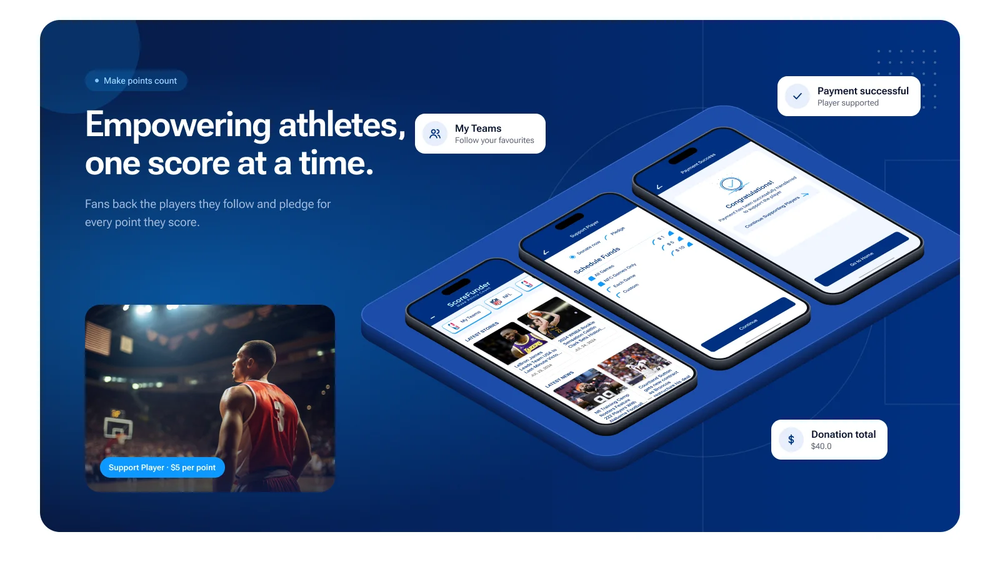
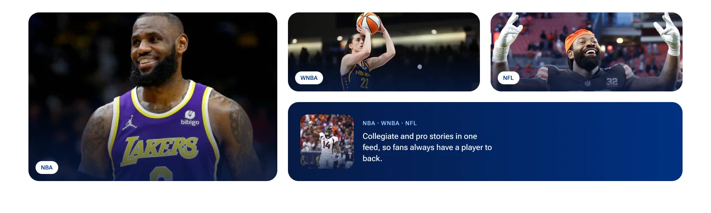
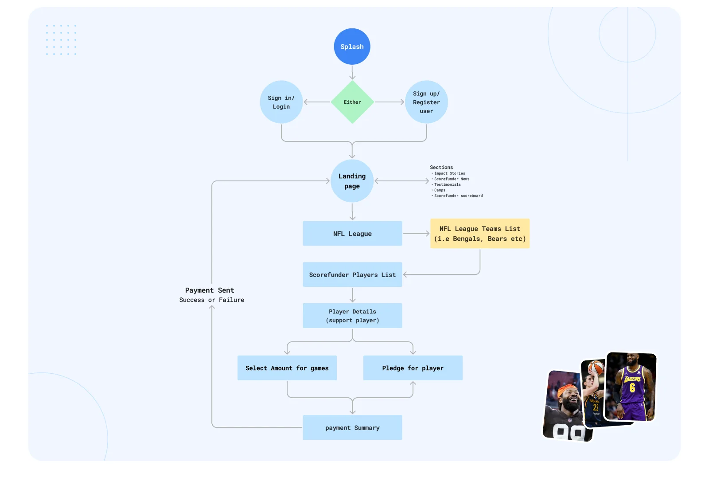
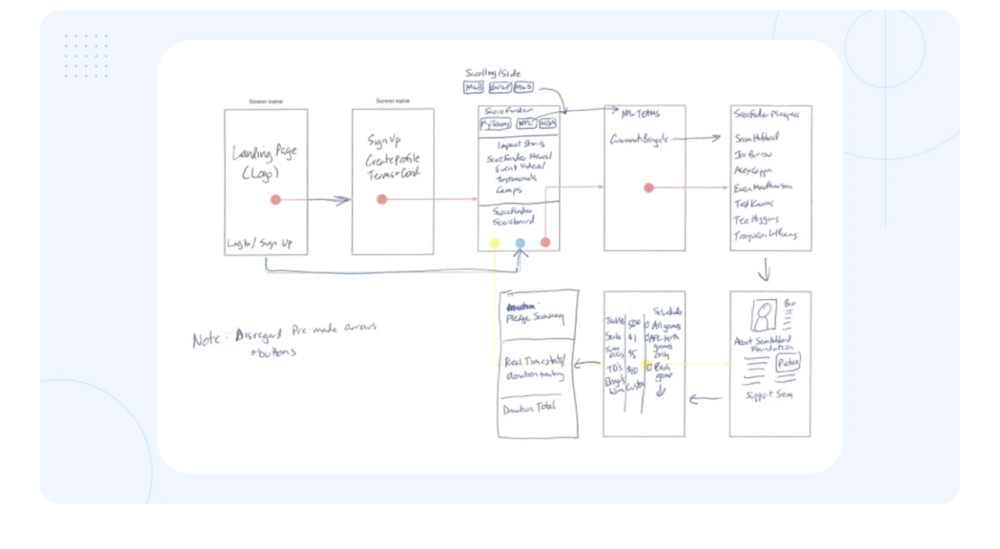
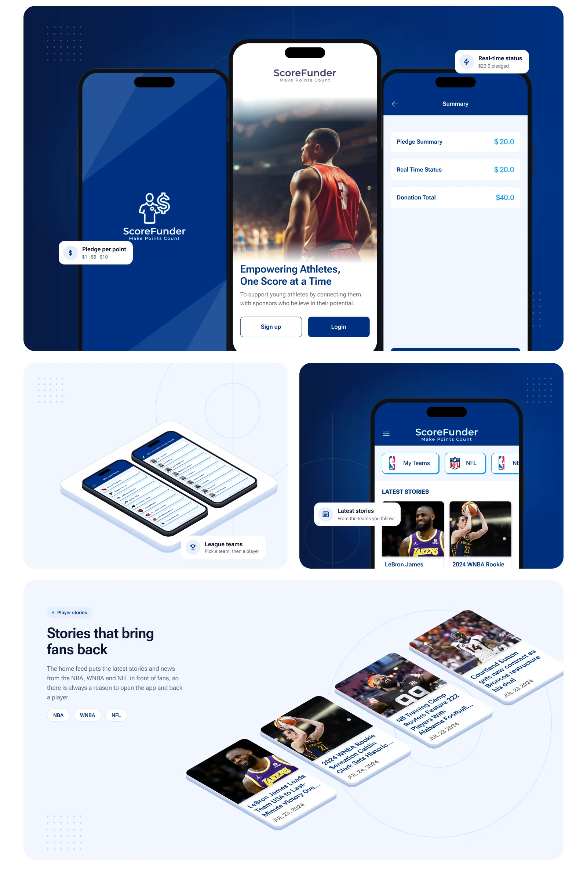
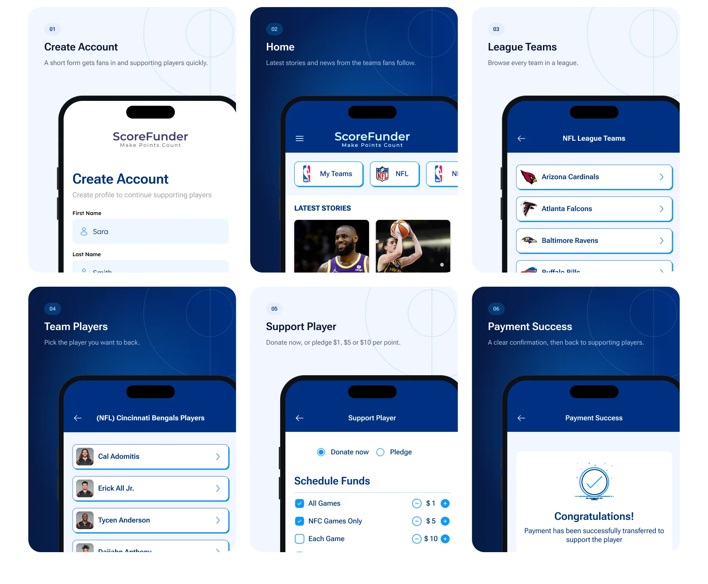
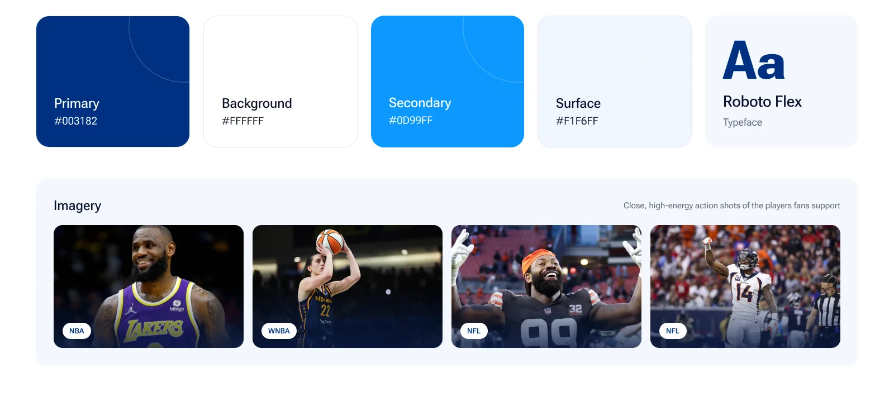

Score Funder
Reimagining the ScoreFunder platform as a mobile app for fans of collegiate and high school sports.
- Platform
- Mobile app
- Product
- Fan engagement for collegiate and high school sports
- Deliverables
- User flow, wireframes, visual design, design system

The product
ScoreFunder is a mobile app that engages and motivates fans of collegiate and high school sports. Interactive features, real-time updates and personalised content build a deeper connection to their favourite teams and athletes.
Information overload, real-time performance and a diverse fan base.
The app has to stay fast and current while serving everyone from casual fans to super fans, without burying them in content.
Personalised, real-time and built for community.
Personalised content and notifications reduce overload, fast real-time updates keep scores current, and chats and polls keep fans engaged. Screen-reader support and high-contrast themes make it accessible.
- Personalised content
- Real-time updates
- Push notifications
- Chats and polls
- Screen-reader support
- High-contrast themes

Platform user flow

Structure before style
The wireframes give fans of collegiate and high school sports a streamlined, intuitive experience, and set the foundation for an app that builds engagement and community.

A modern, team-spirited interface
A vibrant colour palette inspired by team spirit, with dynamic accents that highlight key interactive elements and call-to-action buttons.

From sign-up to support
Fans create an account, follow their teams, pick a player and schedule a pledge for every point, then pay in a couple of taps.

Colour and type
Typography is clean and bold for readability across screen sizes, and iconography is consistent to guide users through the app.
